Concept video: the base at dusk
Ashwright
A survival mod for DayZ. Everything on this island was made by a player: from the first stone tool to the round in the chamber.
You mine 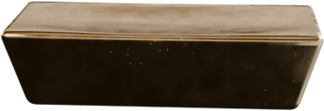 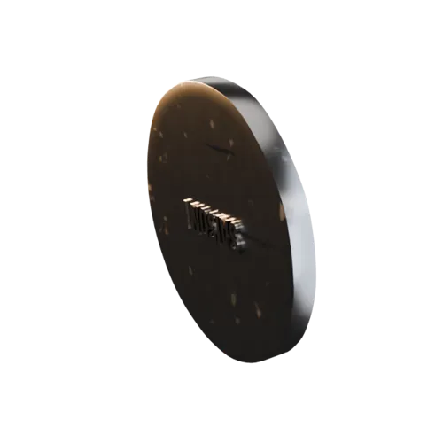 ore, smelt
ore, smelt  house at dusk.
house at dusk.
Not like this before
You may know some of these systems on their own. Here they work together: the weather changes mining, mining changes money, and money is struck by a player.
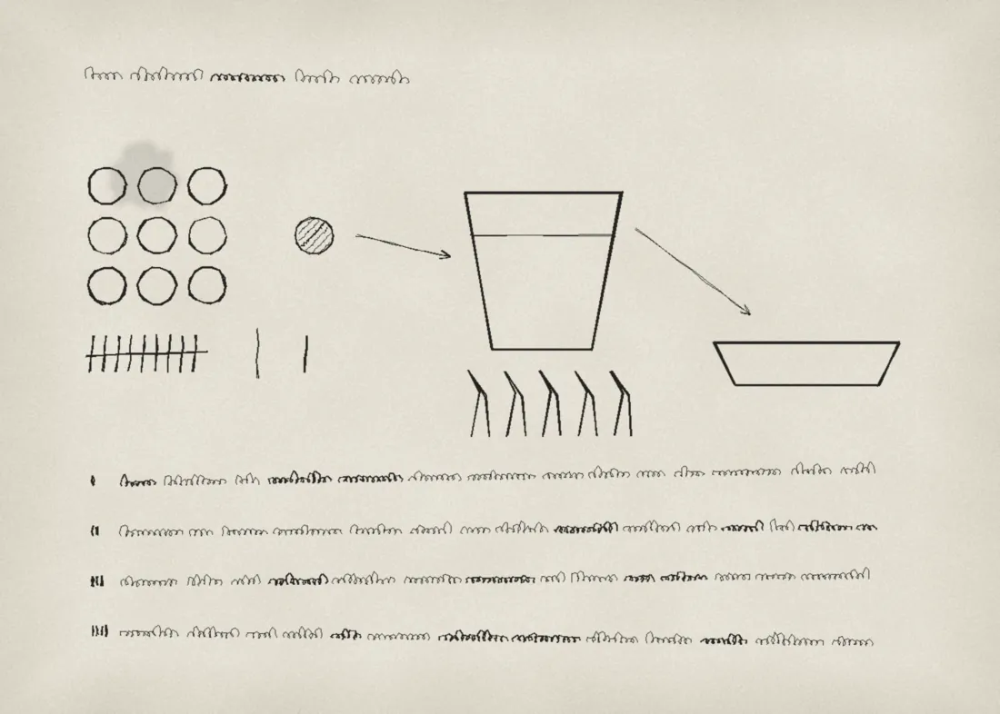


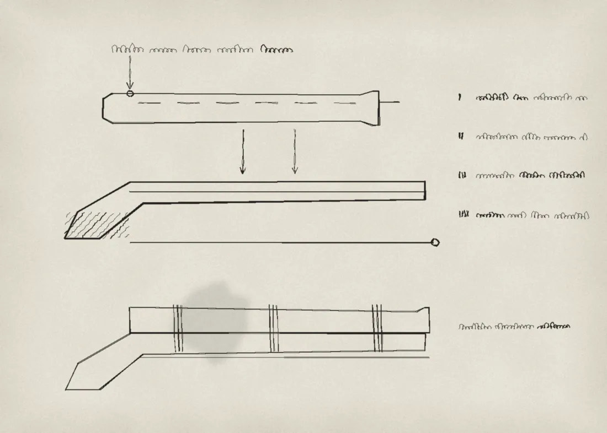
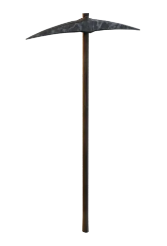
Gameplay: the furnace at dusk
From stone to alloy
Every tier unlocks the next: a harder tool, a hotter furnace, a new material. What you find is only a shortcut, the road you walk yourself.
Ore, ingot and tool: all Impure. Common.
Ore, ingot and tool: all Solid.
Ore, ingot and tool: all Pure.
Ore, ingot and tool: all High-grade.
Ore, ingot and tool: all Flawless. Rare.
Stone
Field stone, wood and clay. You build a charcoal kiln and a furnace by hand and burn your first charcoal.
Running in tests
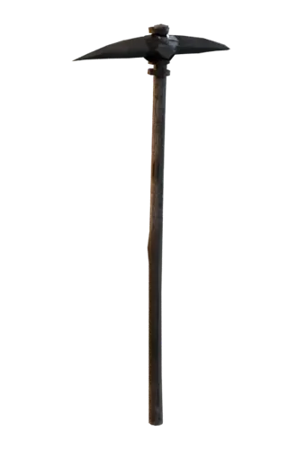
Bronze
Copper and tin become bronze in the clay furnace. You cast your first tool and strike your mark into it for the first time.
Running in tests
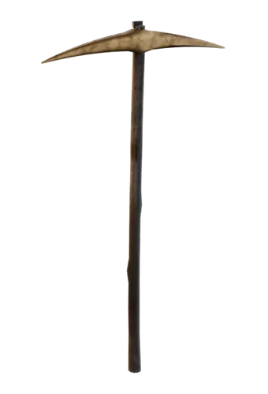
Steel
Iron needs more heat and a pair of tongs. Overnight it turns into steel, you mix powder and build your first firearms.
Running in tests
Alloy
Firebrick, blast furnace, alloy steel: installations that fire for days, and tools that can handle almost anything.
At launch
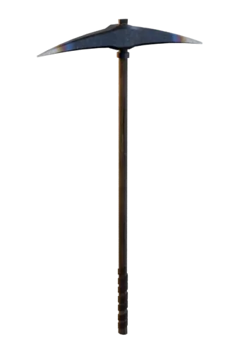
From the depths
Rare, hard materials that only lie deep down. And after that, something the whole server can only do together.
After launch
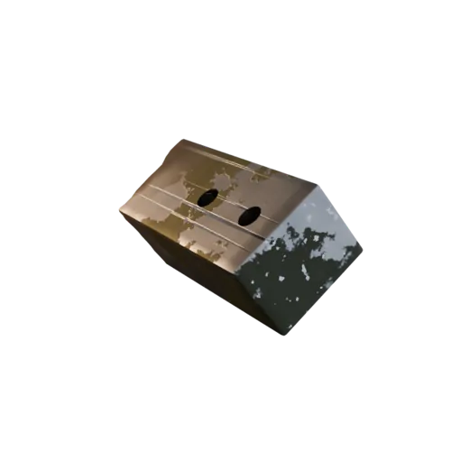


Gameplay: a cabin from foundation to roofConcept image: parlour with a fireplace at duskConcept image: farmyard with animalsConcept image: workshop with a wagon
Your house, your parlour
From the foundation stone to the pitched roof, you build with wood, clay and stone. Shutters, a fireplace and furniture turn a bare frame into a parlour, and furnishing it gives you comfort.
Wood rots and metal rusts, so you keep your base up with tar and paint. Fields, chickens, goats, a cistern and a root cellar: if you want, you live self-sufficient.
14 professions
Every job earns experience in its profession. Some things only a master can make, but your profession never gives you more damage against players. Everything works solo too, trading just saves time.
Raw materials
- Mining
- Prospecting
- Forestry & resin
- Hunting & tanning
Refining
- Smelting
- Ceramics & glass
- Lab
- Farming
- Minter
Making
- Smithing
- Gunsmith
- Mechanics
- Building
Outdoors
- Survival
- plus fitness, stealth, ranged and melee, first aid
The island of Antoria
“In an emergency, the island provides for itself.”
That is what the civil defence leaflet says, and every new character carries it in their jacket. The harbour is abandoned, the south mild, the north cold.
The rest the island tells you itself, through things you find. What you discover goes into your trail book. Some places are dangerous for reasons you can understand, and whoever reads the signs gets further.
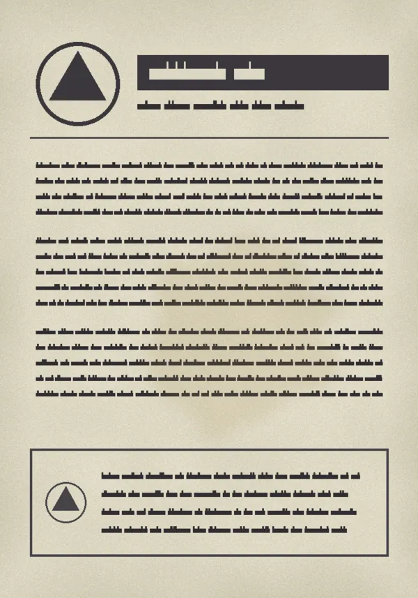
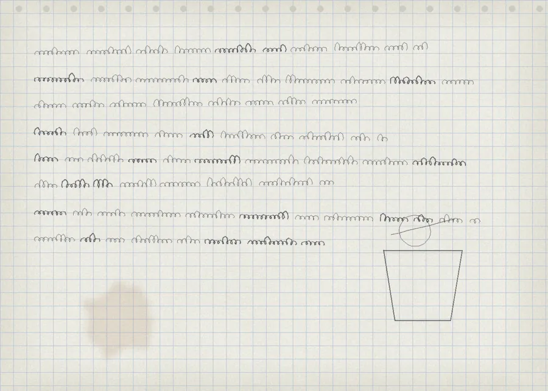
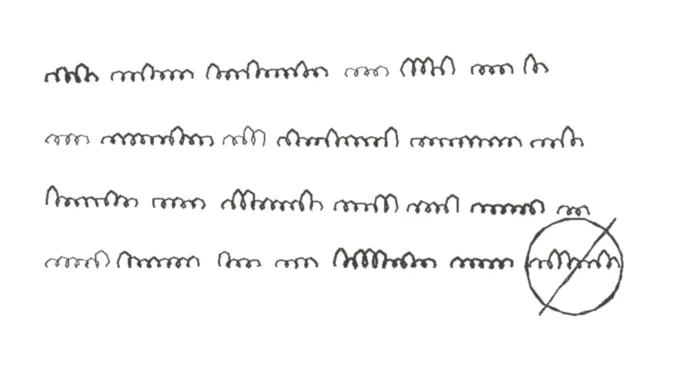
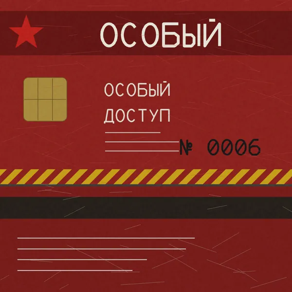
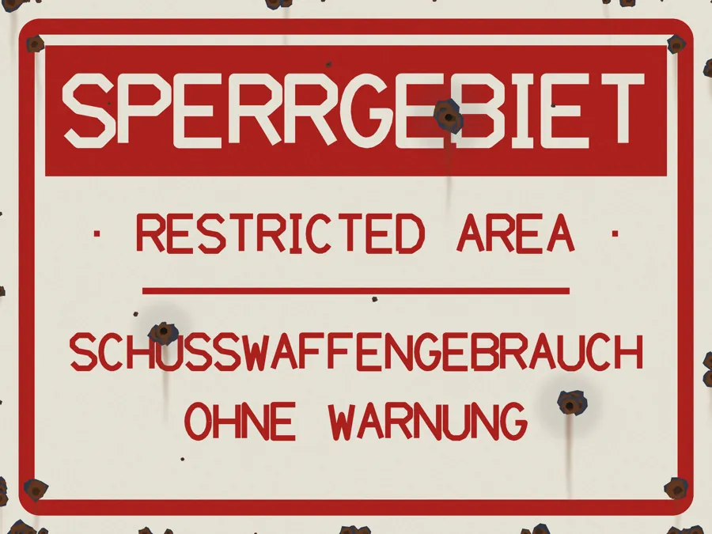
What's in
Season 0 starts as early access, and big updates follow. What comes next is always posted in Discord.
At launch
- Four tiers, from stone to alloy steel
- Base building with furniture, comfort and decay by material
- Farming, fishing, hunting and cooking
- Vehicles, raft and rowing boat
- Weapons from parts and your own ammo
- Coins, coin testers and vending machines
- Dangerous places with puzzles and two deep facilities
- Clothing for the cold of the north
After that
- A fifth tier with rare materials from the depths
- Electricity and salvage from wrecks
- A project for the whole server: a flooded facility that everyone pumps dry together
- The journey into the cold north, across the water
- More documents that tell what happened on the island

Gameplay: furnace at dusk
A spot in season 0
Join the Discord, read the seven rules and enter your Steam64 ID in the “whitelist” channel (17 digits, you find it on steamid.io).
We let players onto the server in waves. We are two people and want to be able to help everyone on the first evening.
Sign up in DiscordQuestions
When does season 0 start?
As soon as the date is fixed, it will be posted in Discord under announcements. Turn on the ping and you will not miss it.
Are there traders?
No. Everything that exists was made by a player, and trading happens between players: hand to hand, on the notice board or at a vending machine.
Can I play solo?
Yes. Every chain can be completed alone. A group just gets there faster.
What does the mod cost?
Nothing. If you want to help carry the server, there will be optional packages later that only affect looks. The shop preview lists what is planned.
Do I need the whitelist?
Yes, at launch. You can sign up in Discord.
Does it run on PlayStation or Xbox?
Sorry, no. DayZ mods are PC only.